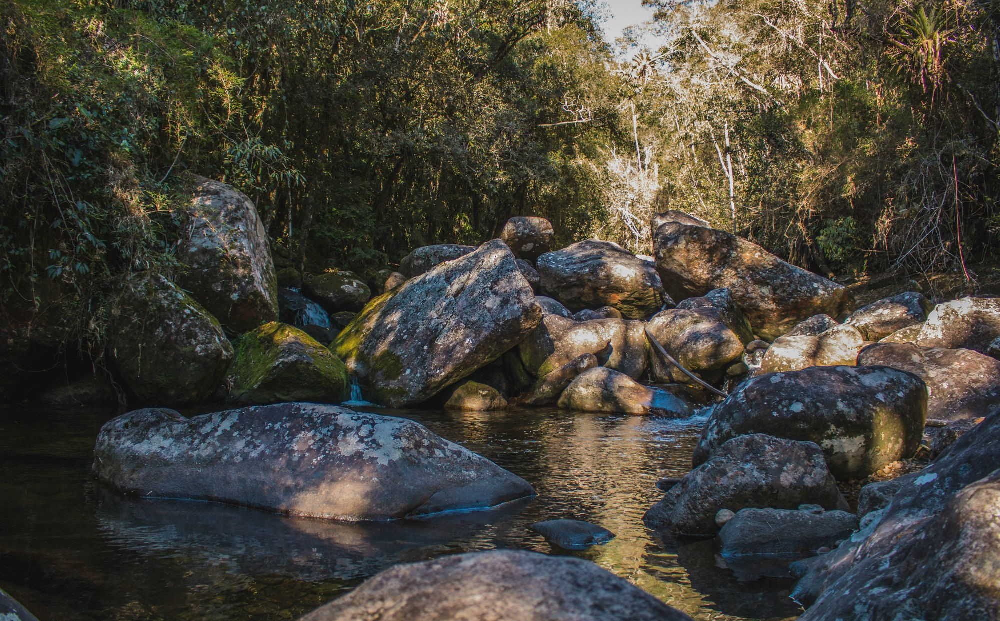
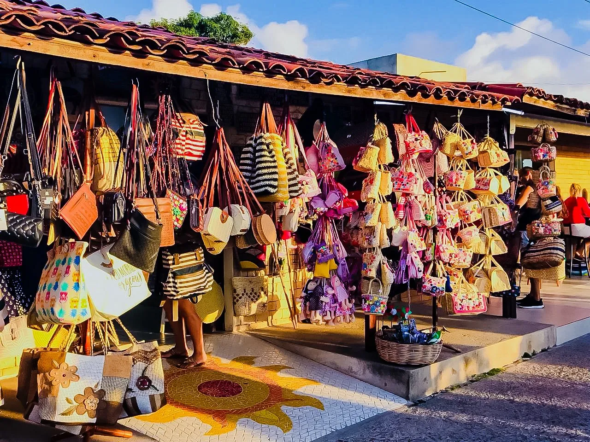
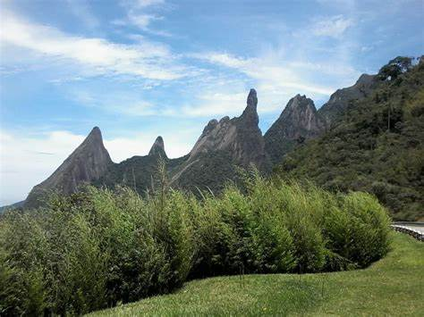

Parque Nacional da Serra dos ÓrgãosEste parque é um dos principais pontos turísticos de Teresópolis e é conhecido por suas trilhas desafiadoras e vistas panorâmicas deslumbrantes. O parque abriga uma grande variedade de flora e fauna, incluindo...Saiba Mais |
Feirinha de Artesanato do AltoA Feirinha de Artesanato do Alto é um lugar perfeito para quem gosta de artesanato local e produtos típicos da região. A feira é realizada todos os sábados e domingos e oferece uma grande variedade de produtos...Saiba Mais |
Mirante do SoberboO Mirante do Soberbo é um dos pontos turísticos mais populares de Teresópolis e oferece vistas panorâmicas incríveis da cidade e das montanhas ao redor. O mirante está localizado a uma altitude de 1.200 metros acima do nível do mar e...Saiba Mais |